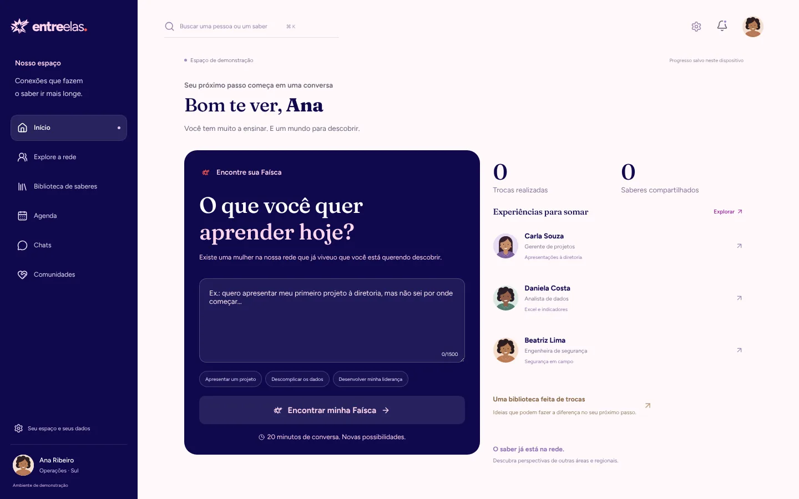
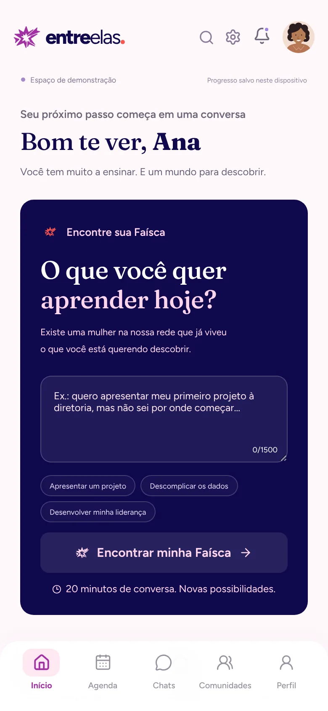

Measure match quality
Build an evaluation set of real requests with expected matches and report precision@3 on every change.
Case study · Hackathon Equatorial · 3rd place
An AI curator that connects women across a large company through 20-minute conversations called Faíscas, matching people by meaning instead of job titles.
01 — Problem
Women in a large company rarely meet people outside their own team, and the usual networking happens after work, exactly when many of them, such as caregivers and mothers of atypical children, have no time.
The brief: a solution that lets colleagues exchange knowledge during work hours, with leadership able to see whether it actually connects different areas and regions.
02 — How the curator works
01
“I need someone who can help me evaluate a RAG pipeline.”
02
The LLM turns the request into 2 or 3 skills, returned as JSON validated with Zod.
03
Embeddings + pgvector find people by similarity, not keywords.
04
Up to 3 people, each with the literal evidence from their profile. Nothing invented.
05
A 20-minute conversation, scheduled inside work hours.
ResilienceGemini → Groq as automatic fallback. If the AI fails or times out, the participant continues on a manual path.
03 — Decisions & trade-offs
People describe needs in free text. Embeddings match meaning, so “help with model evaluation” can find someone who never wrote that exact phrase.
The model may only use facts that exist in the profile. If there is no evidence, it says so. This is what keeps the curator trustworthy.
Prompts do one task at a time and answer in JSON validated with Zod, so invalid output never reaches the screen.
AI use is opt-in, a tip is published only when both participants agree, and chat messages never feed the knowledge map.
Aggregate numbers only: acceptance rate, connections across regions and areas, and knowledge that only one person holds.
The product


04 — What I’d do next
Build an evaluation set of real requests with expected matches and report precision@3 on every change.
Combine keyword and vector search, then rerank, to cover exact names and rare skills.
Check pgvector latency and LLM cost per request at 10,000 profiles before a real rollout.